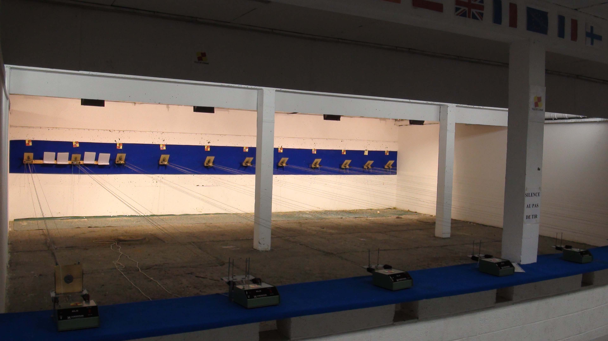
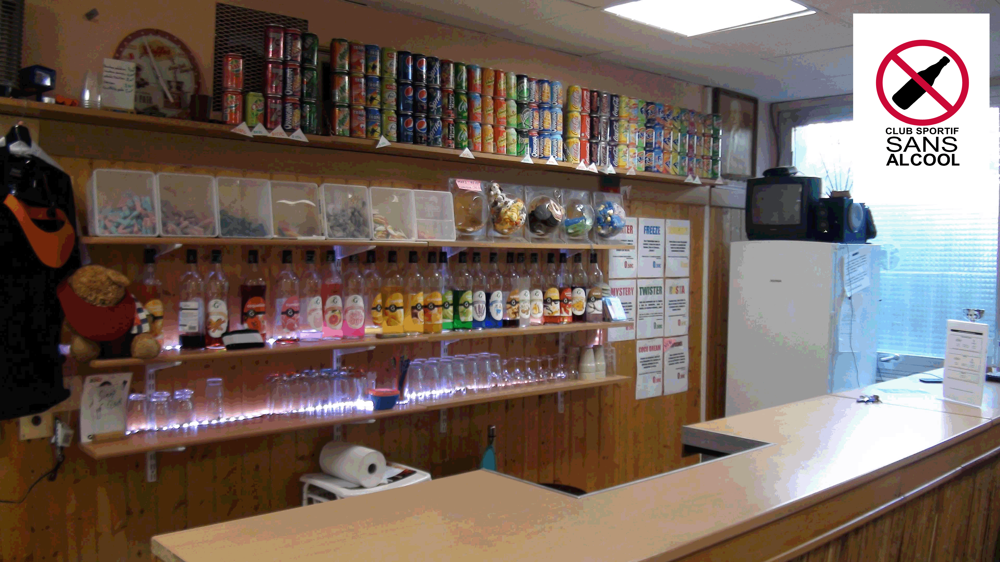
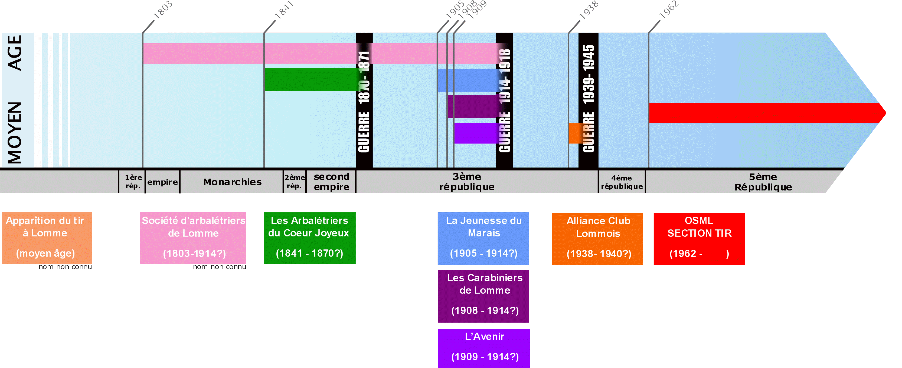

OSM Lomme Tir
Plus de 200 ans d’histoire de tir à Lomme ! Venez découvrir un sport aux nombreuses disciplines olympiques. Le club est affilié à la Fédération Française de Tir (FFTir) et à la Fédération multisports UFOLEP. Formateurs diplômés, équipe dynamique, école de tir labélisée, pôle compétition reconnu au niveau national, club house sans alcool. Venez vous initier au tir sportif dans un club dynamique !
Alors n'hésitez plus, Venez vous faire plaisir !
Qui sommes nous ?
L’Omni Sport Municipal Lommois Section Tir est une association à but non lucratif type loi 1901, nous avons pour but de promouvoir le tir sportif. Le stand de tir situé dans le complexe de la piscine municipale, avenue de Dunkerque est la propriété de la ville de Lomme. L’intégralité des dirigeants, animateurs ou autres, sont bénévoles. Tout adhérent à jour de ses cotisations peu en faire parti sur simple demande auprès du conseil d’administration.
Notre politique interne
L’OSML SECTION TIR à la chance d’avoir à sa tête le plus jeune conseil d’administration de France ! En effet avec 30 ans de moyenne d’âge, l’asso obtient la première place mais attention aux apparances, c’est l’un des clubs ayant la plus forte courbe de croissance et d’évolution.
- la promotion:
- Leader dans ce domaine! édition de 10.000 flyers tous les 2 ans chez imprimeurs, l’impression d’une centaine d’affiches, de centaines de tracts diffusés à domicile, dans les batiments municipaux, nombreuses parutions dans les médias, une gamme d’articles publicitaires variés (voir la boutique) ... , soit plusieurs centaines d’euros alloués par an!
- l’accessibilité du tir à tous:
- jeune avec une école de tir labellisée ESU, femme, personne en difficulté, personne handicapé, nous ne laissons personne de côté et équipons chacun de nos membres avec du matériel dernier cri.
- le développement de nouvelles disciplines:
- afin d’offrir à tous nos adhérents la possibilité de pratiquer les disciplines de leurs choix. Développement du tir à l’arbalète Field, l’arbalète Match, le pistolet standart, le pistolet vitesse, la cible mobile, ... .
Pour réaliser nos projets et ambitions, nous sommes principalement aidés financièrement et matériellement par notre commune de Lomme, le Ministère de la Jeunesse et des Sports, le Conseil Général et le Conseil Régional. Cependant nous cherchons constamment d’autres financeurs, mécènes ou sponsors capables de nous aider d’avantages dans nos projets.
Démocratiser le tir sportif, c’est offrir à tous la chance d’avancer d’aller le plus loin possible. Ce n’est pas prêter du matériel trentenaire mais équiper ces adhérents avec du matériel dernier cri. Cela passe par un investissement massif permettant de rendre ce sport réellement accéssible. Pour évoluer un licencier doit être équipé avec tout le matériel nécessaire (veste, pantalon, gant, arme,...) mais surtout du matériel de qualité soit près de 2000€ pour une carabine, 1300€ pour un pistolet, 2000€ pour une arbalète, 150€ pour une veste,... , auquels viennent s’ajouter un surcoût annuel de 500€/compétiteur (déplacement, frais d’inscription, hébergement,...). Le coût d’un adhérent peut donc vite monter à plusieurs centaines d’euros/an.
Peu de personnes peuvent se permettre de payer autant d’argent chaque année pour pratiquer un sport ou une passion, l’OSML SECTION TIR a donc décider de financer tout cela. Nous avons donc investit et investissons plusieurs dizaines de milliers d’euros pour offrir à nos adhérents Lommois la chance ce concourir dans les meilleurs conditions.
Installations
L’OSML SECTION TIR est heureux de vous acceuillir dans ses locaux entièrement rénovés durant l’été 2010 en attendant l’agrandissement prévu.
Le pas de Tir
- 11 postes de tir carabine et pistolet 10M, dont 2 combi arbalète Match.
- 1 poste de tir pistolet vitesse 10M.
- 1 poste de tir pistolet standard 10M.
- 3 postes de tir carabine couché 10M.
- 3 postes de tir arbalète Field 10M et 1 pas de tir 18M.
Le club house
Un espace de 40m2 est à disposition pour prendre une collation et échanger entre tireurs. Nous proposons de la petite restauration et une large gamme de sirops et de boissons fraîches. L'OSML SECTION TIR est labellisé "Club Sportif Sans Alcool"
L'espace détente
Horaires d'ouverture
| Jour | Horaires | Publics |
|---|---|---|
| Mardi | 18h-20h | Tous publics |
| Jeudi | 18h-20h | Tous publics |
| Samedi | 15h-17h | École de tir |
| Samedi | 17h-20h | Tous publics |
Venir chez nous
433 bis Avenue de Dunkerque
59160 LOMME, FRANCE
Au sous-sol de la piscine de Lomme
Ligne: 10, Arrêt: Lomme-Lambersart
Ligne: 2, Station: Pont supérieur
Parking de 50 places
Tarifs
Il existe deux fédérations différentes qui permettent d'être licencié à l'OSML Tir, l'Ufolep et la FFT, si vous ne savez pas laquelle choisir, c'est surement que la licence Ufolep sera suffisante. En cas de doute vous pouvez nous toujours contacter ou venir nous voir aux horaires d'ouverture.
Ce sport vous intéresse mais vous voulez tester avant de prendre une licence, une initiation gratuite est proposée.
Lomme, Lille, Hellemmes
| Âge | Ufolep | FFT | Ufolep + FFT |
|---|---|---|---|
| (-16ans) | 35,00€ | 35,00€ | 65,00€ |
| Senior(+21ans) | 50,00€ | 80,00€ | 110,00€ |
Autres villes
| Âge | Ufolep | FFT | Ufolep + FFT |
|---|---|---|---|
| (-16ans) | 40,00€ | 40,00€ | 70,00€ |
| Senior(+21ans) | 55,00€ | 85,00€ | 115,00€ |
Pièces à fournir:
- UFOLEP:
-
- 2 photos ( 1 pour le club, l'autre pour coller sur la licence)
- Un certificat médical de non contre-indication à la pratique du tir sportif.
- FFTir:
-
- 1 photo pour le club
- Un certificat médical de non contre-indication à la pratique du tir sportif. Il faudra faire signer la licence par le médecin dès sa réception
- FFTir + UFOLEP
-
- 2 photos ( 1 pour le club, l'autre pour coller sur la licence)
- Un certificat médical de non contre-indication à la pratique du tir sportif. Il faudra faire signer la licence FFTir par le médecin dès sa réception
- Carte Club
-
- 1 photo pour le club
- La photocopie de la licence en cours de validité
Carte Club
Pour avoir accès aux installations et matériels du club en ayant déjà une licence dans un autre club, le prix est de 20€.
Personne en difficulté ?
Nous ne vous laisserons pas tomber, terminé les licences hors de prix! Grâce à nos tarifs attractifs et affiliations avec divers organismes, vous pouvez payer vos licences avec des chèques vacances, tickets de la CAF et coupons sports. Vous bénéficierez aussi des mêmes avantages que les autres tireurs, alors prêt pour l’aventure ?
Vous payez des impôts ? Votre licence est remboursée !
A l’inverse, si vous payez l’impôt sur le revenu, vous pouvez déduire 66% de votre licence de tir Lommoise de cet impôt (dans la limite de 20% du montant total imposable). Exemple: 66€ sur une licence à 100€ soit un prix de revient réel de 34€, qui dit mieux ?
École de tir
L’OSML SECTION TIR possède une école de tir ouverte aux jeunes de 8 à 18 ans le samedi de 15h à 17h. Ils évolueront dans une structure de qualitée et labellisée "École Sportive Ufolep".
Cette structure à pour but d’initier les jeunes au tir à la carabine 10m, au pistolet 10m mais aussi à l’arbalète field, au pistolet standart et au pistolet vitesse. Nous investissons massivement envers les jeunes, dès leurs inscriptions du matériel performant est mis à disposition (pour information près de 2000€ pour un carabiner même débutant).
Nous équipons intégralement les jeunes inscrits avec du matériel dernier cris afin d’assurer une évolution dans les meilleurs conditions (feinwerkbau P700, Anschütz LP@,...) . Fini le vieux matériel trentenaire !
Nos animateurs bénévoles diplômés sont à même de répondre à tout type de public et de pousser votre enfant à son meilleur niveau.
Pour les jeunes le désirants, nous proposons la participation aux championnats des ligues. Celle ci est totalement gratuite, nous assurons si vous le désirez les déplacements via minibus pour se rendre aux différents lieux des manifestations.
Pôle Compétition
Le pôle compétition de l’OSML SECTION TIR à pour but de vous pousser au delà de vos limites, vous faire découvrir votre réel niveau, vous épanouïr en tant que tireur compétiteur... Fini la course à la gloriole, découvrez les vrais valeurs de notre sport !
FFTir, UFOLEP, l’OSML SECTION TIR vous offre la possibilité de concourir dans différentes ligues, notre pôle compétition regroupe l’élite de notre association ainsi que toute personne désirant pratiquer la compétition. Il défend nos couleurs lors des différentes manifestations sportives.
En fonction de votre niveau vous serez intégré dans l’une de nos différentes équipes afin de vous faire progresser par pallier.
L’entrée dans le pôle compétition se fait sur simple demande, il est demandé dès lors de participer régulièrement aux cours de tirs.
L’entrée dans l’élite du pôle compétition se fait en fonction de vos résultats dans l’année sportive qui vous permettrons d’intégrer l’une de nos meilleures équipes mais vous demandera un entraînement intensif mais aussi physique, un suivi des cours et une totale disponibilité pour les championnats.
Quelque soit votre niveau ou votre âge, nous vous formerons et vous ferons évoluer. Vous serez coatché par nos entraîneurs diplomés qui vous ferons découvrir vos réelles capacités.
Pour pouvoir enseigner, une structure doit avoir fait ses preuves. L’OSML SECTION TIR a su conquerir de nombreux titres en FFTir comme en Ufolep au long des dernières années ce qui en a fait une association d’un excellent niveau mais surtout novatrice, dynamique, avec une jeunesse d’esprit.
Comité directeur
Nous mettrons en place d'ici peu le trombinoscope des membres du bureau.
Documents
Ici seront disponible tous les documents utile au fonctionnement du club ainsi que les différents calendriers.
Évènements
Liste des prochains évènements
Partenaires
L'OSML Tir remercie l'ensemble de ses partenaires, qui nous soutiennent matèriellement et financièrement afin de permettre l'accès pour tous au tir sportif.
Histoire du Tir à Lomme
Le tir à Lomme est une pratique remontant au moyen-âge, cependant c’est en 1803 alors que Napoléon est encore 1er consul, que la 1ere société de tir à l’arbalète est créée puis une seconde en 1841 portant le nom d’ "Arbalétriers du Coeur Joyeux", cette dernière disparaîtra durant la guerre de 1870-1871. Puis suite à cette défaite ainsi qu’à l’annexation de l’Alsace Lorraine, l’esprit de la revanche contre l’Allemagne et la Prusse poussera à la création de nombreuses nouvelles associations en France proposant le tir dans l’esprit de "la revanche", on en dénombre jusqu’à 4 à Lomme en 1909!
Ainsi, on pouvait pratiquer le tir à "Les Carabiniers de Lomme", "L’Avenir", "La Jeunesse du Marais" ou encore la première société de tir à l’arbalète déjà centenaire. Cependant, elles disparaîtront presque toutes avec la 1ere guerre (Lomme étant un temps sur le front puis en zone occupée). La seule survivante, "La Jeunesse du Mairais" arrêta la pratique du tir à sa reprise après la guerre (elle proposait avant 4 sports dont le tir). Il faudra attendre 1938 pour que ce sport refasse sont apparîtion durant l’entre deux guerres avec l’ "Alliance Club Lommois" mais là encore, l’association disparaîtra à son tour durant la seconde guerre mondiale. C’est donc à l’après guerre qu’il reviendra à nouveau avec dans un premiers temps des concours organisés par la ville puis avec à la création en 1962 de l’OSML SECTION TIR, unique représentant du tir sportif Lommois depuis sa création.
Tout d’abord, pourquoi ce nom ? Cela remonte à l’entre deux guerres, notre ancien Député-Maire Arthur NOTEBAERT voulait avoir l’ensemble des associations Lommoises regroupées sous un sigle: "Omni Sports Municipal Lommois" puis SECTION ....... (Football, Tennis, Tir, Haltérophilie,...) mais chacune conservant une entière autonomie. La plupart des associations ont accepté mais toutefois pas toutes. Voilà donc pourquoi lors de la relance du tir à Lomme le club s’est appelé OSML SECTION TIR.
1962-1990, Les 30 glorieuses !
Création de l’Omni Sports Municipal Lommois Section Tir. Très vite le club se développe et devient l’une des références de tir dans le Nord. Situé sous la mairie de Lomme, il sera transféré en 1970 sous la piscine municipale et dispose de 14 pas de tir 10 mètres, puis peu de temps après un local disposant de 4 pas de tir 25m et 4 en 50m est inauguré. Grâce au soutien de nombreuses personnes et de Mr le Maire Arthur Notebart, l’OSML SECTION TIR devient une puissante et florissante association Lommoise avec près de 150 adhérents.
1990-2002, le déclin...
L’association commence un long déclin qui durera près de 12 ans dont le point culminant sera marqué par la fermeture du stand de tir 25/50m en 1998 suite aux déboires des anciens dirigeants. Début 2002, seuls 18 adhérents sont encore inscrits à l’OSML SECTION TIR, les voix grondent, l’association est au bord de la dissolution mais le réveil de quelques uns va sonner la fin d’une direction imcompétente...
2002 à aujourd’hui, la renaissance d’un mythe.
Dans l’esprit de quelques adhérents commence à renaître l’esprit de vaincre, Anthony BOUTON et Sébastien VEREMME décident de relancer le club et commencent par constituer un bureau compétent et mettent à la porte les responsables du déclin grâce au soutien des adhérents. Avançant des fonds personnels, ils optiennent de nouveaux financeurs , le Conseil Général, le Conseil Régional et le Ministère de la Jeunesse et des Sports. Dans l’association ne comptant plus que les disciplines carabine et pistolet 10 mètres, la direction décide d’investir massivement dans des disciplines nouvelles : le pistolet standart 10m, le pistolet vitesse 10m puis dans l’arbalète Match et l’arbalète Field IR600.
En 5 ans, plus de 40.000€ sont directement investis en matériel par l’achat d’un stock moderne de carabines, pistolets, arbalètes, pistolets vitesses, vêtements de tir, potences,..., afin d’offrir aux adhérents une prestation de qualité. Outre ces investissements, un budget publicité est créé avec plusiers centaines d’euros (impressions d’affiches, de flyers, tracts, édition de vidéos,...), un budget formation permettant à tous les adhérents de se former gratuitement, un budget compétition de plusieurs milliers d’euros/an offrant à chacun la possibilité de concourir gratuitement aux championnats des ligues FFTir et Ufolep.
L’OSML SECTION TIR regagne enfin ses lettres de noblesses... Le nombre d’adhérents gonfle d’années en années regagnant même certains adhérents partis lors du déclin, on dénombre actuellement près de 60 licenciés.
Actuellement dirigé par le plus jeune conseil d’administration de France gérant un club de tir, avec une moyenne d’âge de 30 ans, l’OSML SECTION TIR reflète parfaitement cette jeunesse:
"La jeunesse est une force, c’est celle de croire qu’avec conviction et motivation tout est réalisable. Devant la résignation et l’adversité des anciens dirigeants qui ont failli causer notre perte, nous affirmons qu’il y a un potentiel incroyable dans ce club qui devient jours après jours plus puissant. Nous n’hésitons et n’hésiterons pas à prendre des risques, calculés, pour permettre à l’association de se développer. Que de chemin a été parcouru tout au long de ces 10 dernières années passées à redresser ce club, mais cette histoire n’est pas terminée, elle ne fait au contraire que commencer et c’est désormais vous qui allez l’écrire à nos côtés. Nous avons la chance de pouvoir compter sur notre puissante ville de Lomme et nos partenaires. Notre détermination sera sans faille, nous ne commaitrons pas les erreurs du passé. Notre unique but est de pousser l’OSML SECTION TIR bien au delà de ses limites, et avec votre confiance nous y arriverons." Anthony B.
Et le futur ?
Suite aux résultats et à la motivation de l’OSML SECTION TIR, un agrandissement des locaux et une totale réfection du stand de tir est prévu par la mairie de Lomme et Lille métropole. Le futur complexe capable d’accueillir des finales de tir comportera salle de réunion et de formation, environ 20 pas de tir 10m, 3 pas de tir arbalètes Field 10m, 3 pas de tir arbalète Field 18m, 1 pas de tir cible mobile,... . Les projets sont nombreux comme l’installation de pas de tir équipés en cibleries électroniques, nous nous donnons 5 ans pour que tout soit réalisé, soit plus de 150.000€ investis depuis 2002.
Découvrir le tir sportif
Le tir sportif est l’un des plus anciens sports encore pratiqué. Il trouve ses origines avec celles de l’Homme ayant le besoin de s’entraîner pour réussir à viser juste afin d’assurer sa survie.
C’est le 13 AVRIL 1369 que le Roi Charles V recommande la pratique officielle de l'arbalète comme essentiellement propre à développer la force et l'adresse. Cette discipline est encore pratiquée de nos jours, notamment dans l’OSML SECTION TIR.
Loïc DELEVALLEZ Arbalète Match 10M.
Le tir sportif trouve cependant son premier grand essor avec les premières armes à poudre qui datent de la fin du XVème siècle et du début du XVIème siècle. Les arquebusiers se regroupent dès cette époque pour se mesurer en concours de Tir, bientôt les premières sociétés civiles apparaissent (dans une organisation proche de nos clubs actuels) vers 1866. Elles se regroupent au sein de l'Union des Sociétés de Tir, actuelle Fédération Française de Tir (seule ligue reconnue au niveau international).
Pierre de Coubertin, 7 fois Champion de France au pistolet, impose dès la création des jeux Olympiques en 1896 que le tir figure au programme des épreuves olympiques. La seconde grande période d’essor du tir a lieu après la défaite de 1870, et s'accentue jusqu'en 1914. Le nombre des Sociétés de Tir répandues sur tout le territoire s'élève à 3 500 et l'on compte 500 000 tireurs. La seconde guerre mondiale stoppera cet élan, après 1945 et jusqu'aux années 60 les stands de tir sont fréquentés par une majorité de gendarmes, de réservistes et de policiers.
Depuis la fin des années 70, le tir sportif retrouve une période d’élan grâce à la sofistication des armes et à une politique promotionnelle de la Fédération.
En 640 ans d’existance, les armes ont énormement changé. Seules les arbalètes conservent des similitudes avec les premiers modèles. Cependant il existe des disciplines où l’on utilise encore des pistolets et carabines à poudre noire, répliques voir modèles d’origine! Le tir sportif regroupe plusieurs dizaines de disciplines, de 10 mètres à 300 mètres! C’est un sport passionnant demandant concentration, maîtrise de soi, condition physique et bien d’autres qualités. Un sport "propre" où seule la vraie valeur de la personne est récompensée, un sport où les adversaires ont une formidable entente, bref un exemple à l’heure actuelle auquel l’OSML SECTION TIR participe.